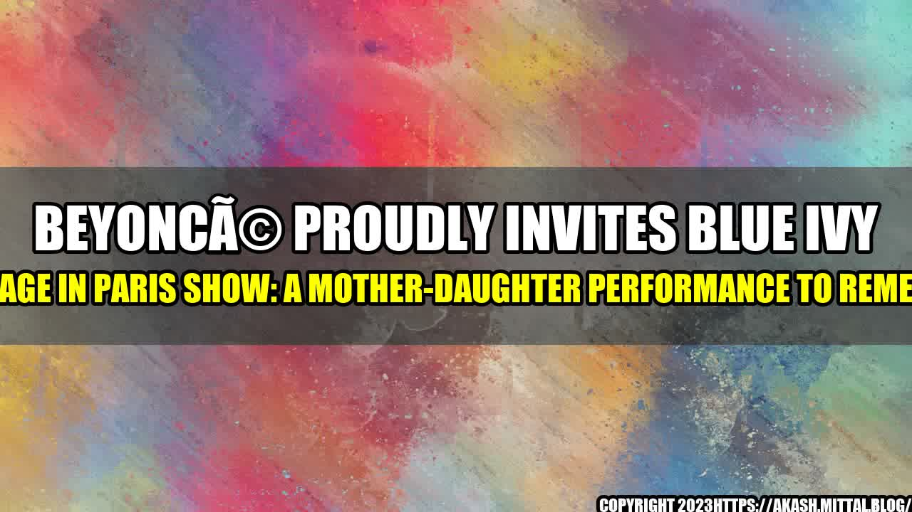

Beyoncé Proudly Invites Blue Ivy on Stage in Paris Show: A Mother-Daughter Performance to Remember

Beyoncé and her daughter Blue Ivy stole the show during the former's recent concert in Paris. The 11-year-old joined her superstar mom on stage to perform a rendition of "Brown Skin Girl," a hit from the 2019 album The Lion King: The Gift. The Parisian audience erupted with applause and cheers, while Beyoncé proudly smiled and held Blue Ivy's hand as they sang together.
The mother-daughter team rocked matching outfits that shone under the stage lights. Beyoncé wore a sparkly, form-fitting catsuit, while Blue Ivy donned a glittery red blazer and pants. The two also sported matching blonde braids, completing their stunning and joyful look.
Success Lessons from Beyoncé and Blue Ivy's Performance
Besides providing a sweet and memorable moment for the audience, Beyoncé and Blue Ivy's performance also offers valuable insights into successful collaboration, particularly in the workplace and creative projects. Here are three lessons we can learn from the mother-daughter duo:
- Trust and respect are key to effective partnership. Beyoncé and Blue Ivy clearly trust and respect each other, evident in the way they complement each other's styles and voices during the performance. Beyoncé allowed Blue Ivy to take the stage and showcase her talent, and Blue Ivy rose to the challenge and delivered an impressive performance. Both parties also gave each other space to shine and express themselves, making the performance a seamless and harmonious presentation.
- Collaboration can bring out the best in everyone. Beyoncé's decision to invite Blue Ivy on stage not only added a delightful surprise to the concert but also highlighted the power of collaborative creativity. By working together, Beyoncé and Blue Ivy created something new and fresh that showcased their unique talents and perspectives. The magic of collaboration lies in the potential to unlock and amplify individual strengths, leading to greater overall success.
- Empowerment and support elevate everyone's performance. Finally, Beyoncé and Blue Ivy's performance demonstrates the importance of empowerment and support in any partnership. Beyoncé empowered Blue Ivy by giving her the opportunity to perform on a global stage and showcasing her talent to millions of fans. This act of trust and support can boost Blue Ivy's confidence and encourage her to pursue her passions. Similarly, Beyoncé's gesture also sends a powerful message to women everywhere to uplift and empower each other in whatever field they are in, fostering a culture of support, growth, and positivity.
Conclusion
Beyoncé and Blue Ivy's performance in Paris is a heartwarming and inspiring example of successful collaboration and empowerment. Their performance highlights the importance of trust, respect, creativity, and support in any partnership, be it in the workplace or personal life. By collaborating effectively and empowering each other, we can achieve greater heights and unleash our full potential. Let us learn from Beyoncé and Blue Ivy's example and aim for excellence in our collaborations and partnerships.
Hashtags: #beyonce #blueivy #paris #performance #motherdaughter #collaboration #success
Curated by Team Akash.Mittal.Blog
Share on Twitter Share on LinkedIn